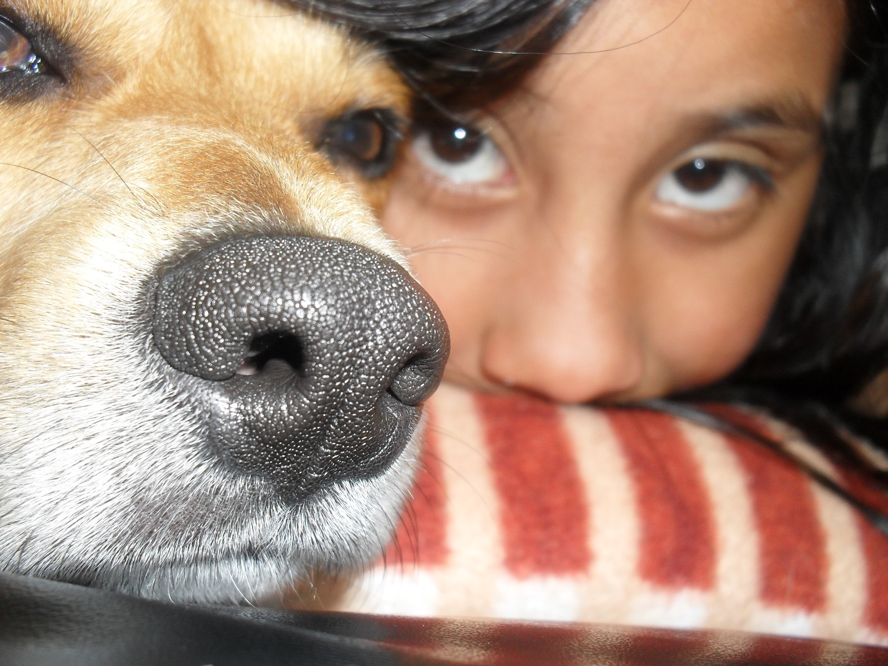
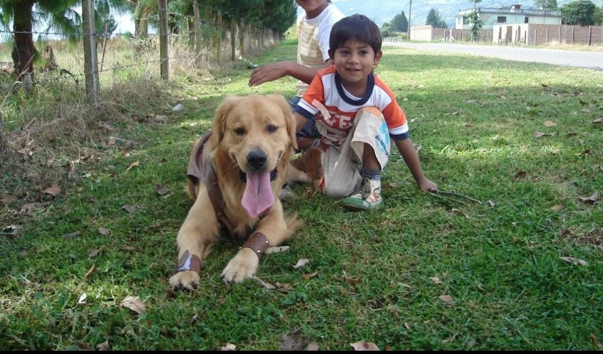
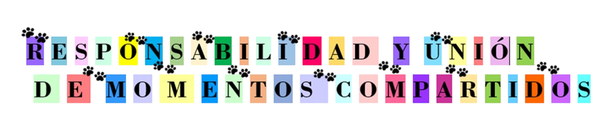

La presencia de una mascota en casa trae una alegría inmensa, Sus juegos, afecto incondicional y compañía constante hacen que cada día tenga un brillo especial. La mirada sincera y el amor puro que ofrecen son un refugio para el corazón cansado.
A pesar de la felicidad que traen la posibilidad de su ausencia genera tristeza, recordándonos cómo su amor llegó para quedarse para siempre, incluso cuando no están físicamente con nosotros.

Estudios han demostrado que tener una mascota reduce el estrés, la ansiedad y la sensación de soledad. Además, caminar con ellos fomenta la actividad física que fortalece el cuerpo y mejora el ánimo, creando un balance emocional y físico vital.

Las mascotas unen familias, creando momentos inolvidables llenos de risas y cariño. Son parte de nuestro núcleo afectivo, y su presencia fortalece los lazos que nos hacen sentir juntos, completos y felices.
Cuidar de una mascota enseña valores importantes como la paciencia, el compromiso y la empatía. Esta experiencia de amor y responsabilidad forma parte esencial del crecimiento personal que nutre nuestra capacidad para relacionarnos con el mundo.